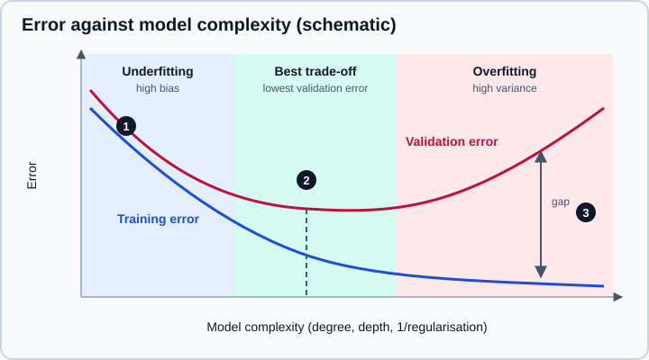

Machine Learning Fundamentals
|
This content was generated with the assistance of AI and should be verified against the official documentation before being relied on in production. |
Examples target Python 3.13 or 3.14. This page targets NumPy 2.5, pandas 3.1 and scikit-learn 1.9, and it was checked in October 2026. Every Python example was run on Python 3.13.18, NumPy 2.5.4, pandas 3.1.0 and scikit-learn 1.9.1. The numbers printed in the outputs come from those runs and will differ slightly with other versions or random seeds.
Machine learning is the practice of fitting a model to examples so that it makes useful predictions on examples it has not seen. The mechanics are simple and are covered once on the estimator API page. What takes time to learn is the judgement around them: what to predict, how to know whether a model is any good, why a model that scores perfectly on its training data can be useless, and how to choose between the many algorithms. This page is the conceptual foundation for the Model Evaluation & Validation page and for every algorithm page of the scikit-learn section. Preparing the inputs is on Feature Engineering.
Deep learning, large language models and transformers are a separate subject, covered in LLM foundations and Hugging Face. Gradient-boosted trees and random forests, which are the usual winners on tables of numbers, are scikit-learn estimators and are covered here and in its section.
What a model is, and the kinds of learning
A model is a function with adjustable numbers inside it. Training searches for the numbers that make the function fit the examples. After training, the function is applied to new rows.
| Kind | The data has | The goal | Examples |
|---|---|---|---|
Supervised learning |
Inputs |
Predict |
Price of a house, whether a transaction is fraud, the digit in an image. |
Unsupervised learning |
Inputs |
Find structure: groups, a lower-dimensional summary, unusual rows. |
Customer segments, topic discovery, anomaly detection. |
Semi-supervised learning |
A few labelled rows and many unlabelled ones. |
Use the unlabelled rows to improve a supervised model. |
Self-training, label propagation. |
Reinforcement learning |
An agent that acts and receives rewards. |
Learn a policy that maximises the total reward. |
Game playing, control problems. Outside scikit-learn. |
Supervised problems split by the type of the target:
-
Regression predicts a number (a price, a duration, a temperature). The error is a distance: squared, absolute or relative.
-
Classification predicts a category. Binary classification has two classes, multiclass has several exclusive ones, and multilabel allows several at once. Most classifiers can also return a probability for each class, which is usually more useful than the hard label.
Other tasks (ranking, forecasting, recommendation, survival analysis) reuse these ideas with special data structures and metrics, and are out of scope here.
The scikit-learn estimator contract
Every scikit-learn model follows one small contract, which is why swapping an algorithm is a one-line change.
-
A model is an object created with its hyperparameters (
LogisticRegression(C=1.0)), and nothing is learned at that point. -
fit(X, y)learns the parameters from the data and stores them in attributes that end in an underscore (coef_,classes_). It returns the estimator itself. Unsupervised estimators callfit(X). -
predict(X)returns the predictions. Classifiers addpredict_proba(X)ordecision_function(X). -
score(X, y)returns a default metric (accuracy for classifiers, R-squared for regressors). Use the functions insklearn.metricsfor anything else. -
Transformers (scalers, encoders, PCA) add
transform(X)andfit_transform(X), and compose with models in aPipeline.
The data is a two-dimensional array or data frame X with one row per example and one column per feature, and a one-dimensional y. Keyword arguments are enforced: since 1.0, optional parameters are keyword-only, so LogisticRegression(1.0) is an error.
from sklearn.datasets import load_breast_cancer
from sklearn.dummy import DummyClassifier
from sklearn.linear_model import LogisticRegression
from sklearn.metrics import accuracy_score
from sklearn.model_selection import train_test_split
from sklearn.pipeline import make_pipeline
from sklearn.preprocessing import StandardScaler
X, y = load_breast_cancer(return_X_y=True, as_frame=True)
X_train, X_test, y_train, y_test = train_test_split(
X, y, test_size=0.2, stratify=y, random_state=0
)
print(X_train.shape, X_test.shape, y_train.mean().round(3), y_test.mean().round(3))
baseline = DummyClassifier(strategy="most_frequent").fit(X_train, y_train)
model = make_pipeline(StandardScaler(), LogisticRegression()).fit(X_train, y_train)
print("baseline accuracy:", round(accuracy_score(y_test, baseline.predict(X_test)), 3))
print("logistic accuracy:", round(accuracy_score(y_test, model.predict(X_test)), 3))
print(model.predict_proba(X_test.iloc[:2]).round(3))
print(model.named_steps["logisticregression"].coef_.shape,
model.named_steps["logisticregression"].get_params()["C"])Output:
(455, 30) (114, 30) 0.626 0.632 baseline accuracy: 0.632 logistic accuracy: 0.982 [[0.989 0.011] [1. 0. ]] (1, 30) 1.0
Source: scikit-learn: Getting Started
Three habits in this short program matter more than the algorithm:
-
train_test_splitholds out data that the model never sees while learning, andstratify=ykeeps the class proportions equal in both parts (0.626 and 0.632 positives here).random_statemakes the split repeatable. -
The
DummyClassifieris a baseline: it always predicts the most frequent class. A model is only impressive relative to a baseline, and a score of 0.632 for doing nothing at all tells you how much of the 0.982 is real skill. -
The scaler sits inside a pipeline, so it is fitted on the training rows only. This is the same rule as in Feature Engineering.
Parameters and hyperparameters
The two words are easy to confuse and the distinction drives how you work.
-
Parameters are learned from the data by
fit: the coefficients of a linear model, the split thresholds of a tree, the cluster centres of k-means. -
Hyperparameters are set before training and control how the model is fitted or how complex it can be: the regularisation strength
C, the depth of a tree, the number of neighbours, the number of clusters. They are not learned byfit, and they must not be tuned on the test set.
Hyperparameters are chosen with a validation set or with cross-validation (GridSearchCV, RandomizedSearchCV, the halving searches), which is described in Grid, Randomized & Halving Search. get_params() and set_params() read and change them on any estimator, and clone makes an unfitted copy with the same hyperparameters; see get_params, set_params & clone.
Training, validation and test sets
A model that is evaluated on the rows it was trained on will look better than it is, because it can memorise them. The remedy is to measure on data it did not train on, and to be strict about how many times you look.
-
Training set: used to fit the parameters.
-
Validation set (or the folds of cross-validation): used to compare models and to choose hyperparameters. Every time you pick the best of several candidates by validation score, the validation score becomes slightly optimistic.
-
Test set: used once, at the end, to estimate how the chosen model will perform on new data. If you keep changing the model until the test score looks good, the test set has become a validation set and you have no honest estimate left.
For small data sets, k-fold cross-validation reuses the data: it splits the training rows into k folds, trains on k-1 of them and validates on the remaining one, k times, and averages the scores. The splitters (stratified, grouped, time-ordered) and the pitfalls of each are on Cross-Validation & Splitters and Model Evaluation & Validation.
The split has to mimic how the model will be used. If it will predict next month from last year, split by time; if it will predict for new customers, keep each customer’s rows on one side (GroupKFold); if the classes are imbalanced, stratify.
Baselines come first
Before fitting anything sophisticated, fit something trivial and write down its score.
-
DummyClassifier(most frequent class, class prior, uniform random) andDummyRegressor(mean, median or a constant) require no learning. -
A one-rule or one-feature model (a threshold on a single column, last week’s value for a forecast, the average per category) is often hard to beat by much and is easy to explain.
-
A regularised linear model or logistic regression on well-prepared features is the strong simple baseline for tabular data.
The baseline answers two questions: is the problem learnable at all with these features, and is the added complexity of a larger model earning its keep? A model that cannot beat the baseline by a clear margin is not ready, however good its absolute score looks. With imbalanced classes the point is sharper: a classifier that says "not fraud" every time scores 99% accuracy on data that is 99% legitimate.
Underfitting, overfitting and the bias-variance trade-off
The central tension in supervised learning is the flexibility of the model.
-
A model that is too simple misses real structure. It has high bias: its errors are systematic and the same on the training and the validation data. This is underfitting.
-
A model that is too flexible also fits the noise in the training sample. It has high variance: a different training sample would give a very different model. It scores well on training data and poorly on new data. This is overfitting.
The expected prediction error of a model decomposes into the squared bias, the variance, and the irreducible noise of the data, which no model can remove. More complexity reduces bias and increases variance, so the best model sits in the middle.

Schematic drawing; the numbered markers (1: both errors high, 2: the validation minimum, 3: the gap between training and validation error) are explained below. The underlying idea is the standard bias-variance decomposition described in the textbooks listed in the references.
-
Marker 1 is the underfitting regime: the training error is high too, so adding data will not help and a more flexible model will.
-
Marker 2 is where the validation error is lowest. This is the complexity to aim for.
-
Marker 3 is the generalisation gap: a small training error with a much larger validation error is the signature of overfitting.
Seeing it with a polynomial
The experiment fits polynomials of increasing degree to a noisy sine wave. The noise has a standard deviation of 0.3, so no model can do better than a mean squared error of about 0.09.
import numpy as np
from sklearn.linear_model import LinearRegression
from sklearn.metrics import mean_squared_error
from sklearn.model_selection import train_test_split
from sklearn.pipeline import make_pipeline
from sklearn.preprocessing import PolynomialFeatures, StandardScaler
rng = np.random.default_rng(0)
X = rng.uniform(0, 1, size=(60, 1))
y = np.sin(2 * np.pi * X.ravel()) + rng.normal(scale=0.3, size=60)
X_train, X_test, y_train, y_test = train_test_split(X, y, test_size=0.5, random_state=0)
print("degree train MSE test MSE")
for degree in [1, 3, 5, 9, 15]:
model = make_pipeline(PolynomialFeatures(degree), StandardScaler(), LinearRegression())
model.fit(X_train, y_train)
tr = mean_squared_error(y_train, model.predict(X_train))
te = mean_squared_error(y_test, model.predict(X_test))
print(f"{degree:6d} {tr:9.3f} {te:8.3f}")Output:
degree train MSE test MSE
1 0.229 0.383
3 0.085 0.139
5 0.060 0.265
9 0.049 0.221
15 0.048 0.863
The straight line (degree 1) is too simple: both errors are high. Degree 3 matches the true curve, and the training error is at the noise floor (0.085). Beyond that the training error keeps creeping down (0.048 at degree 15) while the test error climbs to 0.863. The model has spent its extra freedom fitting the noise of the 30 training points. The jumps in test error from degree to degree (0.265 at degree 5, 0.221 at degree 9) show how noisy a single small split is, which is one reason to prefer cross-validation to one split.
Measuring bias and variance directly
Bias and variance can be estimated by training the same model on many fresh samples of the data and looking at the predictions at fixed points. The squared bias is the squared distance of the average prediction from the truth, and the variance is the spread of the predictions around their own average.
import numpy as np
from sklearn.linear_model import Ridge
from sklearn.pipeline import make_pipeline
from sklearn.preprocessing import PolynomialFeatures, StandardScaler
rng = np.random.default_rng(0)
def true_f(x):
return np.sin(2 * np.pi * x)
x_test = np.linspace(0.05, 0.95, 50).reshape(-1, 1)
f_test = true_f(x_test.ravel())
print("degree bias^2 variance")
for degree in [1, 3, 9]:
preds = []
for _ in range(200):
x = rng.uniform(0, 1, size=(30, 1))
y = true_f(x.ravel()) + rng.normal(scale=0.3, size=30)
m = make_pipeline(PolynomialFeatures(degree), StandardScaler(), Ridge(alpha=1e-6))
preds.append(m.fit(x, y).predict(x_test))
preds = np.array(preds)
bias2 = np.mean((preds.mean(axis=0) - f_test) ** 2)
var = np.mean(preds.var(axis=0))
print(f"{degree:6d} {bias2:7.3f} {var:8.3f}")Output:
degree bias^2 variance
1 0.157 0.021
3 0.003 0.013
9 0.001 0.293
The line has a large bias (0.157) and a small variance (0.021). Degree 9 has almost no bias (0.001) and a variance about fourteen times the line’s (0.293). Degree 3 has the lowest total. This is the trade-off in numbers.
What to do about each problem
| Symptom | Likely cause | Remedies |
|---|---|---|
High training error and high validation error |
Underfitting (bias) |
A more flexible model, more or better features, less regularisation, longer training. |
Low training error and much higher validation error |
Overfitting (variance) |
More training data, a simpler model, stronger regularisation, fewer features, early stopping, bagging or averaging (random forests), cross-validated hyperparameters. |
Both errors fall but then stop at a plateau well above what is acceptable |
The features do not contain enough signal, or the labels are noisy |
Better features and better labels beat a better algorithm. |
Validation error far better than test or production error |
Leakage, a validation set that is not representative, or tuning on the test set |
Re-check the split and the pipeline (see Feature Engineering). |
Regularisation
Regularisation adds a penalty for complexity so the fit has to earn each extra degree of freedom. In linear models it penalises large coefficients: Ridge (L2) shrinks them smoothly, Lasso (L1) sets some exactly to zero and so selects features, and ElasticNet mixes both. Regularisation strength is a hyperparameter, and it is the most important one to tune for linear models.
import numpy as np
from sklearn.datasets import load_breast_cancer
from sklearn.linear_model import LogisticRegression
from sklearn.pipeline import make_pipeline
from sklearn.preprocessing import StandardScaler
X, y = load_breast_cancer(return_X_y=True)
for C in [0.01, 1.0, np.inf]:
m = make_pipeline(StandardScaler(), LogisticRegression(C=C, max_iter=5000)).fit(X, y)
print(f"C={C:<6} training accuracy {m.score(X, y):.3f}")Output:
C=0.01 training accuracy 0.954 C=1.0 training accuracy 0.988 C=inf training accuracy 1.000
Smaller C means a stronger penalty. With C=inf (no regularisation) the model reaches perfect training accuracy on 30 features and 569 rows, which is not a reason to trust it: only a held-out score can say whether that extra accuracy generalises. In scikit-learn 1.9 the penalty argument of LogisticRegression is deprecated (since 1.8) in favour of l1_ratio (0 for L2, 1 for L1, anything between for elastic net) and C=np.inf for no penalty, and passing penalty="l2" emits a FutureWarning. The multi_class argument is gone; three or more classes use the multinomial formulation, and OneVsRestClassifier gives one-versus-rest.
Other models have their own complexity knobs: max_depth, min_samples_leaf and ccp_alpha for trees, n_neighbors for k-nearest neighbours, C and gamma for SVMs, and learning_rate, max_iter and max_leaf_nodes for gradient boosting.
Learning curves and validation curves
Two diagnostic plots answer the practical questions "would more data help?" and "which setting of this hyperparameter is best?".
-
A learning curve plots training and validation score against the number of training examples. If the validation score is still rising when the curve ends, more data will help. If both curves have flattened and sit close together at an unsatisfying level, the model is limited by bias and more data will not help. A large permanent gap points to variance.
-
A validation curve plots training and validation score against one hyperparameter, which is the bias-variance curve above measured on your own model.
import numpy as np
from sklearn.datasets import load_digits
from sklearn.model_selection import learning_curve, validation_curve, ShuffleSplit
from sklearn.svm import SVC
from sklearn.tree import DecisionTreeClassifier
X, y = load_digits(return_X_y=True)
cv = ShuffleSplit(n_splits=5, test_size=0.25, random_state=0)
sizes, train, val = learning_curve(
SVC(gamma=0.001), X, y, cv=cv, train_sizes=np.linspace(0.1, 1.0, 5), scoring="accuracy"
)
print("train size train acc validation acc")
for n, t, v in zip(sizes, train.mean(axis=1), val.mean(axis=1)):
print(f"{n:10d} {t:9.3f} {v:14.3f}")
depths = np.array([1, 2, 4, 8, 16, 32])
tr, va = validation_curve(
DecisionTreeClassifier(random_state=0), X, y,
param_name="max_depth", param_range=depths, cv=cv, scoring="accuracy",
)
print("max_depth train acc validation acc")
for d, t, v in zip(depths, tr.mean(axis=1), va.mean(axis=1)):
print(f"{d:9d} {t:9.3f} {v:14.3f}")Output:
train size train acc validation acc
134 0.999 0.921
437 0.998 0.976
740 0.998 0.985
1043 0.998 0.989
1347 0.999 0.993
max_depth train acc validation acc
1 0.203 0.181
2 0.323 0.299
4 0.624 0.562
8 0.941 0.833
16 1.000 0.856
32 1.000 0.856
The support vector machine has a training accuracy near 1.0 at every size, and the validation accuracy climbs from 0.921 to 0.993 as the training set grows, so the gap closes with more data (a variance problem that data fixes). In the tree, depth 1 and 2 underfit badly (both scores near 0.2 to 0.3), the validation score stops improving around depth 16 at 0.856 while the training score reaches 1.0, so depths beyond 16 buy nothing on new data. The classes LearningCurveDisplay and ValidationCurveDisplay draw these curves directly from an estimator; they are described on Validation & Learning Curves.
Learning without labels
Unsupervised learning has no target to score against, so evaluation is indirect.
-
Clustering groups rows (
KMeans,DBSCAN,HDBSCAN,AgglomerativeClustering,GaussianMixture). Compare candidates with internal measures such as the silhouette score, and always judge by whether the groups are useful, which requires looking at them. -
Dimensionality reduction (
PCA,TruncatedSVD,NMF,TSNE) compresses many features into a few, for visualisation, noise removal or as a preprocessing step. -
Anomaly and novelty detection flags rows that differ from the rest (
IsolationForest,LocalOutlierFactor,OneClassSVM).
from sklearn.cluster import KMeans
from sklearn.datasets import make_blobs
from sklearn.metrics import silhouette_score
X, _ = make_blobs(n_samples=300, centers=4, cluster_std=0.8, random_state=7)
for k in [2, 3, 4, 5, 6]:
km = KMeans(n_clusters=k, n_init=10, random_state=0).fit(X)
print(k, round(km.inertia_, 1), round(silhouette_score(X, km.labels_), 3))Output (the number of clusters, the within-cluster sum of squares and the silhouette score):
2 8867.6 0.605 3 2313.8 0.786 4 365.6 0.846 5 327.1 0.735 6 293.0 0.595
Source: scikit-learn: Clustering
The within-cluster sum of squares (inertia_) always falls as k grows, so it cannot choose k on its own: the sharp bend at k=4 (the "elbow") and the peak silhouette at 4 agree with the four centres that generated the data. On real data the evidence is rarely so clear. Since k-means depends on its random start, n_init and random_state are set explicitly, as the example does. The algorithms are covered on the Clustering, decomposition and outlier detection pages.
Choosing an estimator
There is no algorithm that wins everywhere, a result sometimes called the "no free lunch" theorem. In practice the choice follows the kind of problem, the amount of data and how much you need to explain the model. The scikit-learn documentation has an "algorithm cheat-sheet" flowchart (the machine learning map). The decision tree below is a simplified original summary of the same idea, not a copy, and it ends at families to try first, not at a single answer.
Rules of thumb that hold up on tabular data:
-
Start with a regularised linear model or logistic regression after scaling. It trains in seconds, is hard to break and gives the baseline to beat.
-
Gradient-boosted trees (
HistGradientBoostingClassifier,HistGradientBoostingRegressor, or the XGBoost and LightGBM libraries) and random forests are usually the strongest general-purpose choices on tables with mixed feature types, need little scaling, and handle missing values and (for the histogram-based ones) categories directly.HistGradientBoosting*is stable: the oldenable_hist_gradient_boostingimport is a no-op. -
Support vector machines are strong on small to medium data with a good kernel and scaled features, but they scale poorly with the number of rows, and
SVC(probability=True)is deprecated in 1.9 (to be removed in 1.11), so preferdecision_functionor a calibration wrapper. -
k-nearest neighbours is simple and needs scaled features, but is slow at prediction time on large data.
-
Choose an interpretable model when the decision must be explained to a person; see Ethics, Privacy & Responsible Data Use.
The detailed pages are in the scikit-learn section: Choosing the Right Estimator, Linear Models, Decision Trees and Gradient Boosting.
A practical workflow
A sound first pass at a supervised problem is short and always in this order:
-
State the question, the target, the cost of each kind of error and how the model will be used. This decides the split, the metric and the baseline.
-
Split the data before looking closely at it: a test set that you set aside and do not touch, and a way to validate on the rest (cross-validation, or a validation set).
-
Explore the training data only (Exploratory Data Analysis) and clean it (Data Cleaning & Preparation).
-
Fit a baseline and record the score.
-
Build one
Pipelinewith the preprocessing and a simple model, evaluate it with cross-validation, and compare it with the baseline. -
Diagnose with learning and validation curves, try a more flexible model, tune its hyperparameters with cross-validation, and keep the preprocessing inside the pipeline.
-
Evaluate the final model once on the test set, and report the metric with its uncertainty and with the baseline for context.
-
Save the pipeline with its library versions, and monitor it after deployment (Reproducibility & MLOps Basics).
The same sequence is the training loop of the CRISP-DM cycle described on The Data Science Workflow.
Where older books and tutorials are outdated
Many machine learning tutorials predate scikit-learn 1.0 and pandas 3. Statements that no longer hold:
| Older statement | Current state (October 2026) |
|---|---|
|
These modules moved to |
|
|
|
Removed in 1.2 because of an ethical problem with one of its features. Use |
|
mldata.org no longer exists. Use |
|
It now returns a data frame by default ( |
Defaults such as |
Changed in 0.22: |
|
Removed in 1.2. Use |
|
|
|
|
|
Raises an error since 0.24: a seed has no effect without shuffling. |
|
Removed; |
Random seeds with |
Pass |